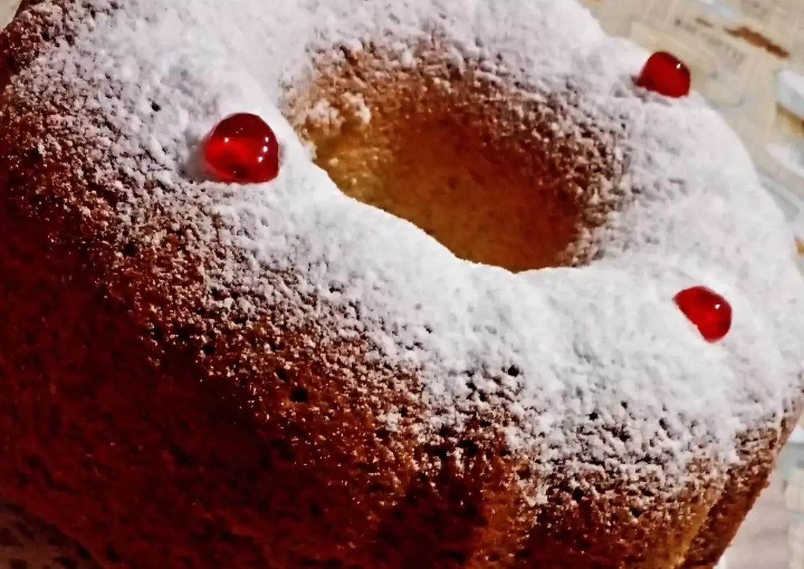

Vanilla donut with sugar
Donuts are a common and sweet pastry that everyone loves, and more with that sweet white sugar on top
There are a lot of recipes but today we are going to make a simple vanilla donut
50 minutes 10 servings
Ingredients
- 2 cups of self-rising flour
- 1 cups of sugar
- 3eggs
- 1/2 cup of oil
- 1 cup of milk
- Vanilla essence (to taste)
Steps
- Mix the sugar with the eggs
- Add the oil and mix well, then add the milk and vanilla essence.
- Gradually add the previously sifted flour.
- Then incorporate everything into a buttered/floured mold, and bake until the dough is clean when you poke it with a fork
- Once it is cold, throw impalpable sugar on top
Back to Homepage